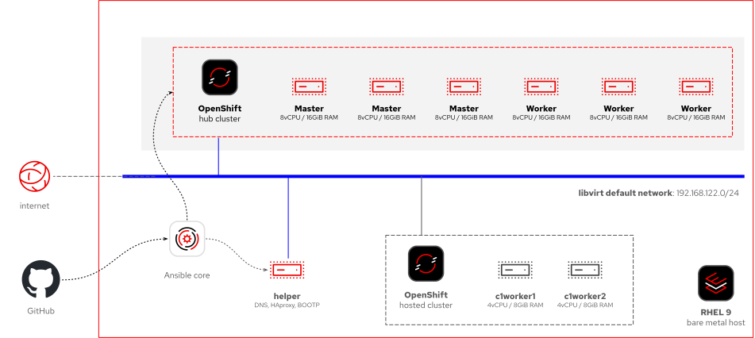
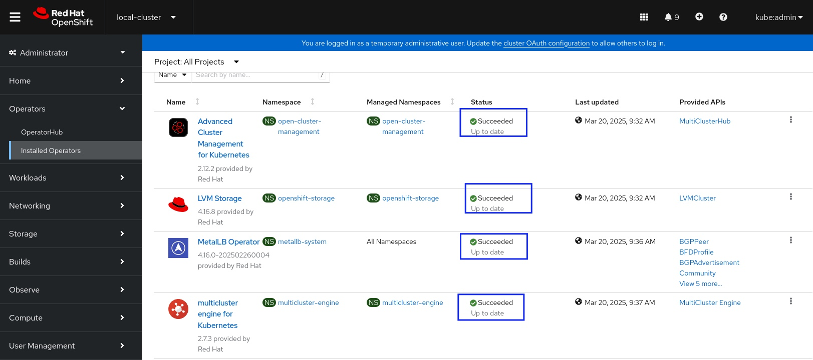
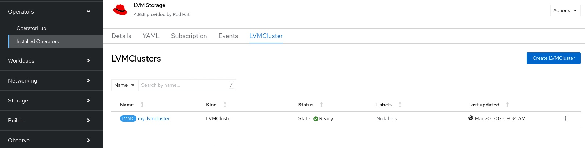

Setup the Hub Cluster
This lab shows how to provision a hub cluster with ACM and other required operators, by using provided Ansible playbooks and the OpenShift web console.
Watch the optional video and then follow the instructions in this section to perform the lab.
| If you have issues watching the video embedded in this page, watch it directly on the Red Hat media space, which requires the Red Hat VPN and an employee log in. |
-
Review the architecture of the proof-of-concept for HCP on bare metal nodes.
Now you will add the hub cluster.
-
Update
/etc/resolv.confto set the helper vm as the primary DNS server. Keep the AWS DNS server as a secondary option. >>>>>>> main# vi /etc/resolv.conf nameserver 192.168.122.21 nameserver 10.0.0.2That change is NOT persistent, it’s lost if you stop and restart your demo environment or its EC2 instance. -
Run the Ansible playbook to set up the hub cluster and ACM.
-
The playbook may take over 50 min to complete. If your SSH client may disconnect due to inactivity, it’s recommended that you start a tmux session, to prevent your shell from being terminated and taking the Ansible runner with it.
# tmux -
Run the playbook.
# ansible-playbook -i inventory/hosts setup_hub_cluster.yaml --ask-vault-pass -
If your playbook fails close to its end, you may have a healthy cluster and manually follow the playbook’s source code to complete its complete tasks manually, for example:
... TASK [setup-hub-acm : Lets wait for 300 seconds for Operators to be ACTIVE] ********************************************************************************** ok: [localhost] TASK [setup-hub-acm : Setup MultiClusterHub Resource] ******************************************************************************************************** fatal: [localhost]: FAILED! => {"changed": true, "cmd": "oc apply -f \"/root/hcp-on-bm/roles/setup-hub-acm/files/acm/04-multicluster-hub.yaml\"\n", "delta": " 0:00:30.167446", "end": "2025-06-16 14:55:20.295256", "msg": "non-zero return code", "rc": 1, "start": "2025-06-16 14:54:50.127810", "stderr": "E0616 14:55:20 .289510 73369 memcache.go:265] \"Unhandled Error\" err=\"couldn't get current server API group list: Get \\\"https://api.hub.mylab.com:6443/api?timeout=32s\ \\": dial tcp 192.168.122.39:6443: i/o timeout\"\nerror: unable to recognize \"/root/hcp-on-bm/roles/setup-hub-acm/files/acm/04-multicluster-hub.yaml\": Get \ "https://api.hub.mylab.com:6443/api?timeout=32s\": dial tcp 192.168.122.39:6443: i/o timeout", "stderr_lines": ["E0616 14:55:20.289510 73369 memcache.go:265 ] \"Unhandled Error\" err=\"couldn't get current server API group list: Get \\\"https://api.hub.mylab.com:6443/api?timeout=32s\\\": dial tcp 192.168.122.39:64 43: i/o timeout\"", "error: unable to recognize \"/root/hcp-on-bm/roles/setup-hub-acm/files/acm/04-multicluster-hub.yaml\": Get \"https://api.hub.mylab.com:64 43/api?timeout=32s\": dial tcp 192.168.122.39:6443: i/o timeout"], "stdout": "", "stdout_lines": []} PLAY RECAP *************************************************************************************************************************************************** localhost : ok=38 changed=26 unreachable=0 failed=1 skipped=0 rescued=0 ignored=0Connect to the cluster and assess it is healthy. If it is, review the tasks that are pending after the failed task.
# less roles/setup-hub-acm/tasks/main.ymlPerform the pending tasks manually.
# oc create -f roles/setup-hub-acm/files/acm/04-multicluster-hub.yaml # oc create -f roles/setup-hub-acm/files/lvm-storage/04-lvm-cluster.yaml # oc create -f roles/setup-hub-acm/files/metal-lb/04-metalLB.yaml # oc create -f roles/setup-hub-acm/files/metal-lb/05-ip-pool.yaml # oc create -f roles/setup-hub-acm/files/metal-lb/06-L2Advertisement.yaml -
If your playbook fails and you are unsure about the viability of completing tasks manually, you may may destroy your libvirt VMs and restart, for example:
... TASK [setup-hub-cluster : Approve all pendign CSR for Worker nodes] ****************************************************************************************** changed: [localhost] TASK [setup-hub-cluster : Waiting for cluster Bootstrap to finish] ******************************************************************************************* fatal: [localhost]: FAILED! => {"changed": true, "cmd": "openshift-install --dir=/var/lib/libvirt/images/hub_install wait-for bootstrap-complete --log-level=info\n", "delta": "0:20:00.092716", "end": "2025-06-17 18:51:56.411394", "msg": "non-zero return code", "rc": 5, "start": "2025-06-17 18:31:56.318678", "stderr": "level=info msg=Waiting up to 20m0s (until 6:51PM UTC) for the Kubernetes API at https://api.hub.mylab.com:6443...\nlevel=error msg=Attempted to gather ClusterOperator status after wait failure: listing ClusterOperator objects: Get \"https://api.hub.mylab.com:6443/apis/config.openshift.io/v1/clusteroperators\": dial tcp: lookup api.hub.mylab.com on 10.0.0.2:53: no such host\nlevel=info msg=Use the following commands to gather logs from the cluster\nlevel=info msg=openshift-install gather bootstrap --help\nlevel=error msg=Bootstrap failed to complete: Get \"https://api.hub.mylab.com:6443/version\": dial tcp: lookup api.hub.mylab.com on 10.0.0.2:53: no such host\nlevel=error msg=Failed waiting for Kubernetes API. This error usually happens when there is a problem on the bootstrap host that prevents creating a temporary control plane.", "stderr_lines": ["level=info msg=Waiting up to 20m0s (until 6:51PM UTC) for the Kubernetes API at https://api.hub.mylab.com:6443...", "level=error msg=Attempted to gather ClusterOperator status after wait failure: listing ClusterOperator objects: Get \"https://api.hub.mylab.com:6443/apis/config.openshift.io/v1/clusteroperators\": dial tcp: lookup api.hub.mylab.com on 10.0.0.2:53: no such host", "level=info msg=Use the following commands to gather logs from the cluster", "level=info msg=openshift-install gather bootstrap --help", "level=error msg=Bootstrap failed to complete: Get \"https://api.hub.mylab.com:6443/version\": dial tcp: lookup api.hub.mylab.com on 10.0.0.2:53: no such host", "level=error msg=Failed waiting for Kubernetes API. This error usually happens when there is a problem on the bootstrap host that prevents creating a temporary control plane."], "stdout": "", "stdout_lines": []} PLAY RECAP *************************************************************************************************************************************************** localhost : ok=30 changed=20 unreachable=0 failed=1 skipped=0 rescued=0 ignored=0Run the clean up playbook.
# ansible-playbook -i inventory/hosts cleanup_hub.yamlTry again creating the hub cluster.
Most times, there would be no need to destroying your AWS open environment and recreating it from scratch, if you experience a failure running the playbook. There are two clean-up playbooks:
cleanup-hub.yaml-
Destroys only the VMs that belong to the hub cluster.
cleanup.yaml-
Destroys all VMs, including the helper VM. If you use this one, you must return to the previous lab to run the playbook which configures the bare metal host and its helper VM.
-
-
Create a read-only copy of the kubeconfig file of the hub cluster, and use it to validate that the hub cluster is healthy.
# cp /var/lib/libvirt/images/hub_install/auth/kubeconfig ~ # chmod a-w ~/kubeconfig # export KUBECONFIG=~/kubeconfig # oc adm wait-for-stable-cluster [ terminate with Ctrl+C when it reports stable for a few sec ] # oc get node # oc get co -
Get the console URL and the kubeadmin password.
$ oc whoami --show-console $ cat /var/lib/libvirt/images/hub_install/auth/kubeadmin-password ; echo -
Using either a VNC viewer, or Waypipe (which you configured in the previous lab), launch a web browser and login to the OpenShift console using the kubeadmin user and password.
-
Validate that MetalLB, LVM Storage, and ACM operators are installed and configured.
 -
Validate the LVM Cluster is running.
 -
Within the MetalLB operator validate that MetalLB, L2Advertisement and IPAddressPool resources are created.